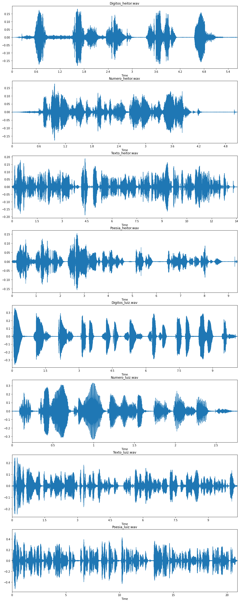
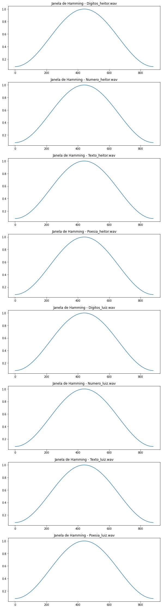
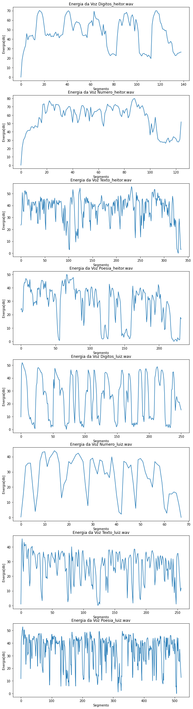
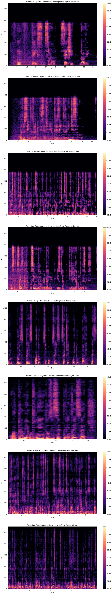
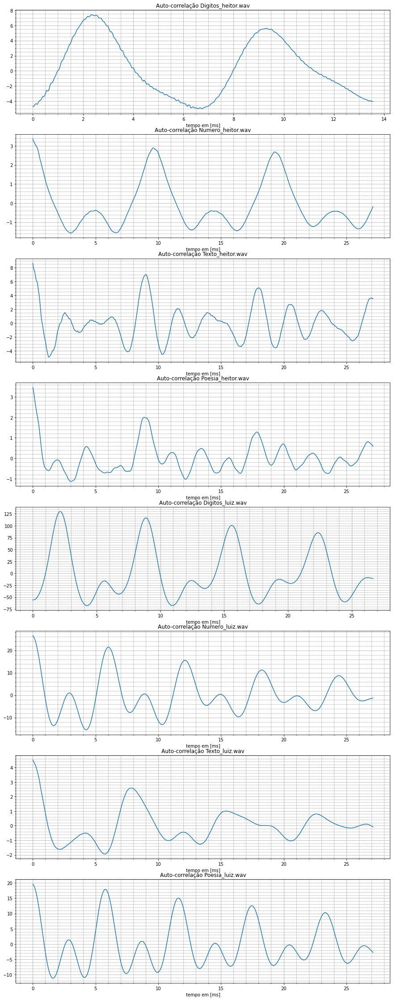
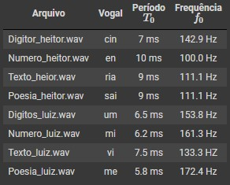
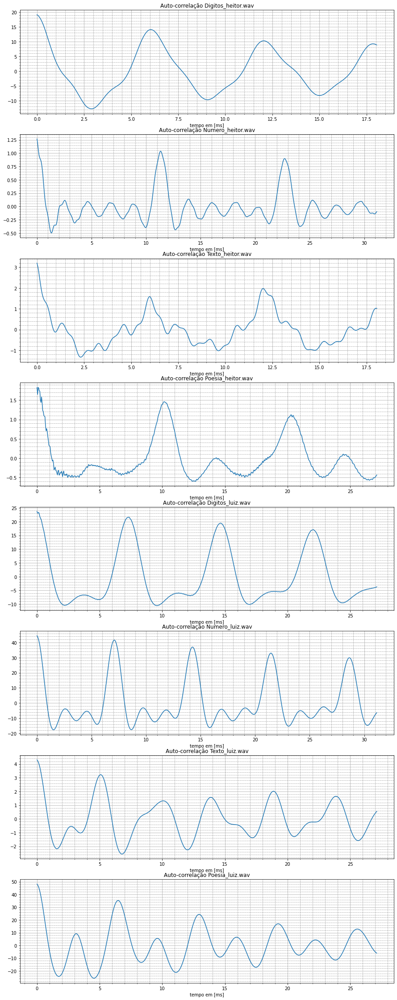
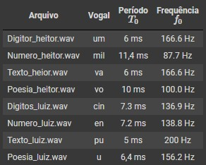
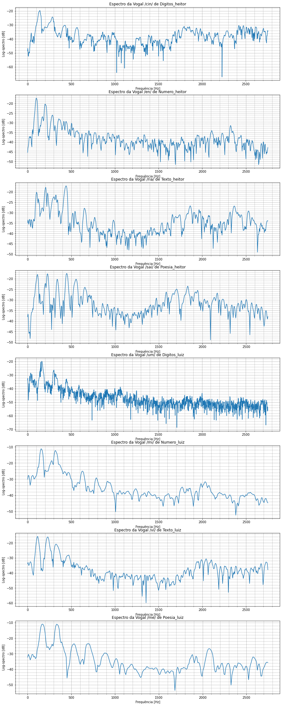
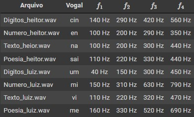

1. Objetivos
Este laboratório tem os seguintes objetivos:
2. Roteiro
Neste laboratório, foi utilizado o roteiro disponibilizado no próprio arquivo do Jupyter Notebook. O arquivo foi editado para atender à proposta e a versão final pode ser visualizada neste link.
3. Desenvolvimento
Inicialmente foi realizada a gravação de arquivos de áudio no software Audacity usando microfones comuns. Os áudios originais podem ser visualizados a seguir:
Dígitos de Heitor:
Número de Heitor:
Texto de Heitor:
Poesia de Heitor:
Dígitos de Luiz:
Número de Luiz:
Texto de Luiz:
Poesia de Luiz:
A imagem a seguir mostra o sinal gráfico de cada arquivo de áudio gravado.

Com base nos arquivos de áudio gravados, foram realizados cortes em 2 intervalos para cada arquivo e definidos os seguintes parâmetros de análise:
Frequência de Amostragem (Digitos_heitor) 22050
Tamanho do Segmento (Digitos_heitor) 882
Número de Segmentos no Arquivo 140. Pontos Soprepostos 441
Frequência de Amostragem (Numero_heitor) 22050
Tamanho do Segmento (Numero_heitor) 882
Número de Segmentos no Arquivo 126. Pontos Soprepostos 441
Frequência de Amostragem (Texto_heitor) 22050
Tamanho do Segmento (Texto_heitor) 882
Número de Segmentos no Arquivo 338. Pontos Soprepostos 441
Frequência de Amostragem (Poesia_heitor) 22050
Tamanho do Segmento (Poesia_heitor) 882
Número de Segmentos no Arquivo 234 . Pontos Soprepostos 441
Frequência de Amostragem (Digitos_luiz) 22050
Tamanho do Segmento (Digitos_luiz) 882
Número de Segmentos no Arquivo 252. Pontos Soprepostos 441
Frequência de Amostragem (Numero_luiz) 22050
Tamanho do Segmento (Numero_luiz) 882
Número de Segmentos no Arquivo 69. Pontos Soprepostos 441
Frequência de Amostragem (Texto_luiz) 22050
Tamanho do Segmento (Texto_luiz) 882
Número de Segmentos no Arquivo 258. Pontos Soprepostos 441
Frequência de Amostragem (Poesia_luiz) 22050
Tamanho do Segmento (Poesia_luiz) 882
Número de Segmentos no Arquivo 523. Pontos Soprepostos 441
A seguir é exibida a janela de Hamming para cada intervalo de corte:

A seguir é exibida o gráfico de contorno de energia dos intervalos de corte:

Finalmente, os espectrogramas:

Abaixo são exibidos os cortes do primeiro intervalo definido. Eles foram selecionados manualmente com o objetivo de destacar trechos com sonoridade silábica.
Trecho "cin":
Trecho "en":
Trecho "ria":
Trecho "sai":
Trecho "um":
Trecho "mi":
Trecho "vi":
Trecho "me":
Para cada trecho cortado, foi analisada uma janela do sinal e realizado o gráfico de auto correlação:

Disso, foram obtidos os períodos de pitch ($T_0$), medidos manualmente como os intervalos de picos sucessivos, e calculadas as frequências fundamentais ($f_0$) relativas a cada trecho.

De maneira semelhante, são exibidos os cortes do segundo intervalo definido. Eles foram selecionados manualmente com o objetivo de destacar trechos com sonoridade silábica.
Trecho "um":
Trecho "mil":
Trecho "va":
Trecho "vo":
Trecho "cin":
Trecho "en":
Trecho "pu":
Trecho "u":
Para cada trecho cortado, foi analisada uma janela do sinal e realizado o gráfico de auto correlação:

Disso, foram obtidos os períodos de pitch ($T_0$), medidos manualmente como os intervalos de picos sucessivos, e calculadas as frequências fundamentais ($f_0$) relativas a cada trecho.

Em cada trecho, pode-se observar o espectro para determinar a formante. Os espectros podem ser vistos na imagem a seguir:

As formantes $f_1$ a $f_4$ podem ser determinadas analisando-se as frequências dos quatro primeiros picos. Os valores foram obtidos manualmente, o que pode prejudicar a precisão dos valores, que foram agrupados na tabela a seguir.

4. Conclusões
Neste laboratório o objetivo foi analisar sinais de áudio identificando sinais de vogais e consoantes. Nota-se claramente que as vogais são melhor idenificáveis pelo espectro de amplitudes, o que já não ocorre com trechos de áudio com consoantes. A análise realizada deve ser diferente para cada caso. Vale destacar que as análises realizadas neste trabalho foram parcialmente manuais, o que significa que os períodos de pitch, frquências fundamentais e formantes foram obtidas manualmente por análise gráfica. Isso pode prejudicar a qualidade das análises, o que motiva a adoção de um método computacional para identificação de tais parâmetros em trabalhos futuros.